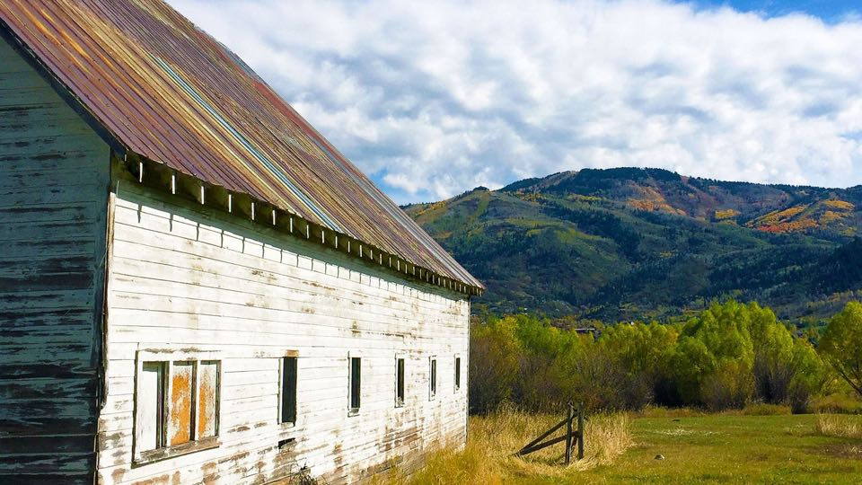
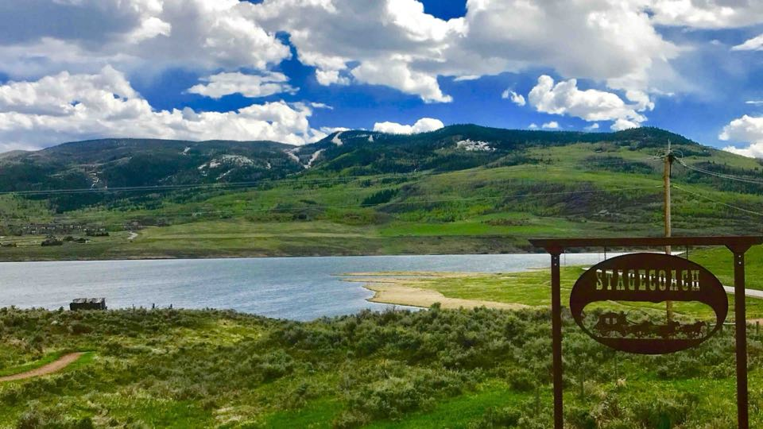
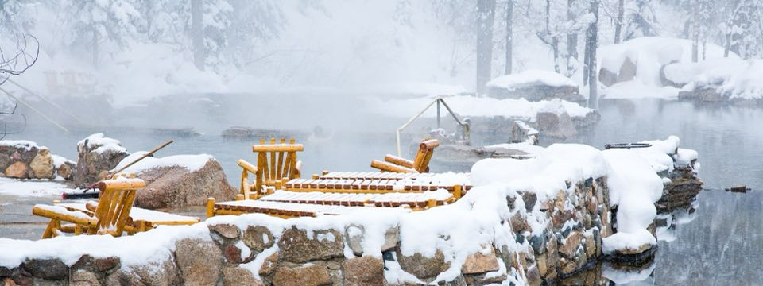

Oak Creek, Yampa, and Phippsburg — ranching towns at the valley's south end, with quiet, character, and real value.
Living in South Routt
The South Routt area begins roughly 25 miles south of Steamboat and contains the historic towns of Oak Creek, Phippsburg, Yampa and Toponas.
A working town, Oak Creek was built on coal mining and as the local’s like to say, ‘pioneer grit’. It earned its name from dense clusters of scrub oak, which border the creek running through the canyon as you enter the town from the north.
Pioneers John and Henry Meyers led the way with wagon mining, just outside of town. At one time, school enrollment in Oak Creek was higher than Steamboat Springs.
In the early 1900s, this bustling town gained a reputation for putting on boxing events and several youngsters earned Golden Gloves in the 1940s. Today, sports remain a focal point within the community, with strong support for their wrestling, football and basketball teams.
Housing costs are lower and lot sizes tend to be smaller. In the surrounding areas, acreage and smallholdings border sizeable working ranches.
“Oak Creek was built on coal mining and, as the locals like to say, ‘pioneer grit.’”
Phippsburg is a smaller community south of Oak Creek and currently home to around 300 residents. At one time, Phippsburg was the main shipping point for locally mined coal, vegetables and cattle.
Surrounded by ranchlands, Phippsburg is a rural neighborhood with affordable housing opportunities. The town still has a post office, which was opened in 1909.
Further south on Highway 131 is Yampa. Larger than Phippsburg, the town has several cafes and bars, a merchandise store, public library and South Routt Elementary School.
As a gateway into the Flat Tops Wilderness area, Yampa is a popular stopping point for cyclists and campers. The Yampa Ranger District is located downtown and Finger Rock Rearing Ponds, run by the Colorado Division of Wildlife, is several miles south.
Properties vary from small to medium size cabins, cottages and single-family homes. South Routt offers more affordable living costs and easy access to outdoor recreation.
On the Map
Keep Exploring

The river corridor south of town — a mix of subdivisions and acreage bridging Steamboat and Stagecoach.
Explore South Valley →
Around Stagecoach Reservoir — lake recreation, a growing community, and some of the best value in the county.
Explore Stagecoach →
Just northeast of downtown — wooded lots, the famous hot springs, and a tucked-away feel that stays close to town.
Explore Strawberry Park →South Routt
Talk to a broker who lives where you’re looking — they’ll tell you what the listings won’t.